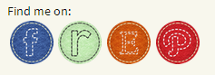

Share Buttons
Easily add sharing buttons to your posts and pages:

Choose one of 9 icon sets:
Select up to 12 social services, in any order you like:
Work with a variety of different themes:
Link Buttons
Put links to your profiles in your header, footer or sidebar:

Add to any theme with widgets, shortcodes or action hooks
Includes options for Ravelry,
Etsy, Craftsy
and Pinterest
Overview
You can have links like this in each post:
And links like this in your header, footer or sidebar:
You can choose from nine different icon styles to match your theme.
The icons can be automatically added to the top or bottom of each post, and or you can
position the link buttons using either a widget, a shortcode or a template action hook.
You can use the share button and link button functions either separately, or together:
Share Button mode allows you to put a set of buttons at the top or
bottom of each post. Each button will share that post with that particular service.
That is, clicking the facebook icon will open a window for the user to share your post on
their Facebook page. (Note that not all services support sharing, for instance,
you can't share via Etsy or Craftsy.
Link Button mode lets you configure the buttons to link directly
to your profiles on the social networks. So clicking the facebook icon will take the
user to your facebook page, clicking the Etsy icon will take them to your Etsy shop.
These are designed to be included in either your header, sidebars or footer, as they
are not specific to a post. These can be easily included by adding the Social Link
Button widget to the area where you want the buttons to appear.
Supported social services include:
- Digg
- Email (share only)
- Etsy (link only)
- Facebook
- Google+
- LinkedIn
- Pinterest
- Ravelry
- Reddit
- Stumble Upon
- Tumblr
- Twitter
You can also choose exactly which services you want separately for each mode,
so you can can have *Share Buttons* for Ravelry, Pinterest, Facebook, Twitter and
Email, but have *Link Buttons* for Google+, Pinterest and your Etsy shop.